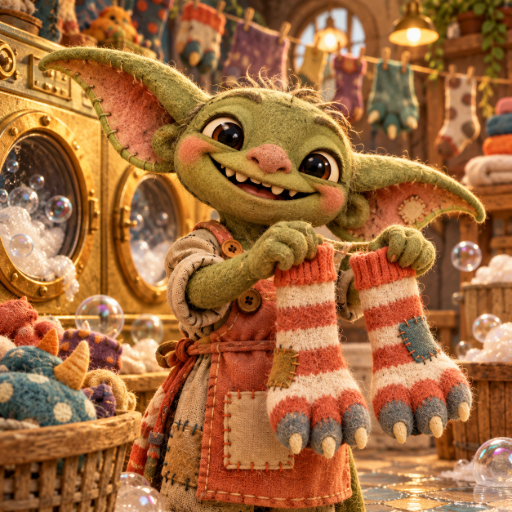

<- all projects

Sock Goblins
PC
Volume
Live
A little chaos. A lot of socks.
Run a monster laundromat with a crew of tiny goblins. Match three-toed socks, tame snake scarves and build a cozy home behind the machines. Click a basket, then another, to move its top sock, which can only join an empty basket or matching socks. Fill each basket with a single pattern, using the two spare baskets to make room, and undo whenever you like at no cost. 180 sorting orders with wriggling scarves and enormous laundry, 12 monster customers with their own requests and 24 furnishings to buy and arrange in the goblins' home.